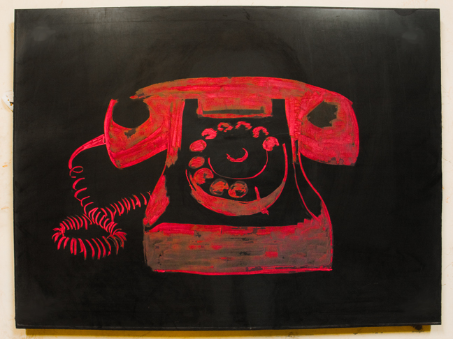
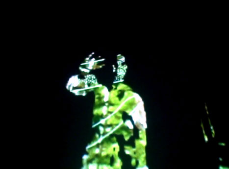
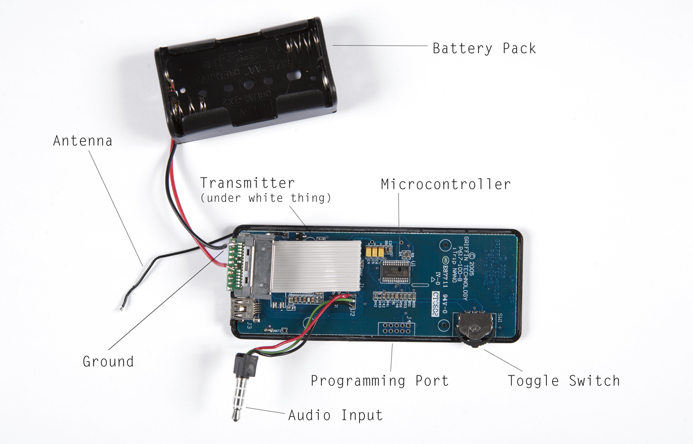

people doing strange things with electricity
The 132dc46th dorkbot-nyc meeting took place at 7pm on Wednesday, April 6th, 2011 at Location One in SoHo.
+++++++
It featured the periuranion and apouranion:

Dustin Grella: Animation Hotline
Animation Hotline is a series of daily animations where I use messages left on my voicemail for content. In a day and age when most of the newspapers have moved from print to the internet, I'd like to do the same for the funny pages. Leave me a message before the dorkbot session and I'll try to animate it. Use the keyword "dorkbot" somewhere in the message, so I know to bring it in to screen that night. Animation Hotline +1 212-683-2490
http://vimeo.com/channels/animationhotline
Joelle Bitton: Hide & Seek
Joelle Bitton recently realized that most of her work dealt with showing and hiding inner thoughts, fantasies, dreams, personal geographies. All themes that particularly fit the interactive use of interfaces. She's therefore keen to share her findings by showing - and hiding - some of her extroverted/secretive work.
http://www.superficiel.org/joelle
Ed Bear and Lea Bertucci: ExiTrip
ExiTrip is a project by Artist/Engineer team Lea Bertucci and Ed Bear and sponsored by Free103point9. As is, this outmoded iPod accessory only functions with a single generation of iPod Nano, which is no longer manufactured. At 40¢ each on Ebay, the low price creates unprecedented distribution opportunities for a low power transmitter and encourages end-user experimentation. We have hacked the iTrip to function without necessity of an iPod, vastly increasing its usefulness as a development platform for artists and designers. Since September of 2010, we have distributed these hacked devices to artists of different disciplines and are documenting their work for a forthcoming book. How can we, as artists, thinkers, hackers and designers break the cycle of electronic waste that is perpetuated by planned obsolescence and bad design?
http://exitrip.org
NEXT MEETING: 04 May 2011